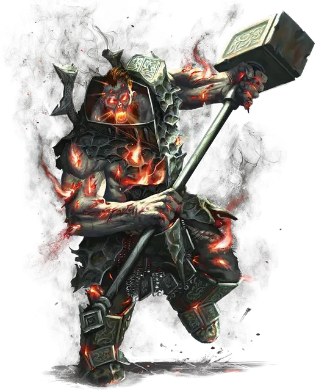

Огненные живые мощи
Firegaunt
Огромная Нежить, обычно законно-злая

Класс Доспеха 15 (повреждённые латы)
Хиты 175 (14к12 + 84)
Скорость 40 футов
| мод | спас | ||
|---|---|---|---|
| СИЛ | 25 | +7 | +7 |
| ЛОВ | 7 | −2 | +2 |
| ТЕЛ | 23 | +6 | +10 |
| мод | спас | ||
|---|---|---|---|
| ИНТ | 10 | +0 | +0 |
| МДР | 14 | +2 | +2 |
| ХАР | 13 | +1 | +5 |
Навыки Атлетика +11, Восприятие +6
Сопротивление урону некротическая энергия
Иммунитет к урону огонь, яд
Иммунитет к состояниям истощение, окаменение, отравление
Чувства пассивное Восприятие 16
Языки Великаний
Опасность 11 (7200 опыта)
Бонус мастерства +4
Особенности
Пламенная кровь. Всякий раз, когда существо, находящееся в пределах 5 футов от живых мощей, попадает по ним рукопашной атакой, наносящей колющий или рубящий урон, это существо получает 5 (1к10) урона огнём.
Действия
Мультиатака. Огненные живые мощи совершают две атаки Раскаленным молотом.
Раскаленный молот. Рукопашная атака оружием: +11 к попаданию, досягаемость 10 футов, одна цель. Попадание: 23 (3к10 + 7) дробящего урона. Огненные живые мощи могут заставить молот вспыхнуть алым пламенем, и цель должна совершить спасбросок Ловкости Сл 18, иначе получит 10 (3к6) урона огнём и 10 (3к6) урона некротической энергией. Молот может извергать пламя подобным образом лишь один раз за ход.
Багряные лучи (перезарядка 5-6). Огненные живые мощи испускают пылающие лучи из своих глаз, рта и ран в виде 30-футового конуса. Каждое существо в этой области должно совершить спасбросок Ловкости Сл 18, получая 31 (7к8) урона огнём в случае провала или половину этого урона в случае успеха. В случае успеха или провала существо загорается. Пока горящее существо или другое существо, которое может дотянуться до него, не использует действие для тушению пламени, горящее существо не сможет восстанавливать хиты и получает 5 (1к10) урона огнём в начале каждого своего хода.
Описание
Огненный великан, чья пылающая ненависть мешает ему перейти в загробную жизнь, восстает в виде огненных живых мощей. Порожденные глубокой ненавистью, огненные живые мощи выискивают живых существ, чтобы уничтожить их. Подобно призраку, они не ищат искупления; они просто надеются причинить как можно больше разрушений, прежде чем достичь своего окончательного забвения.
Огненные живые мощи выглядят как сильно обгоревший труп. Сверхъестественное багровое пламя течет по их венам, вырываясь из ран и рта.